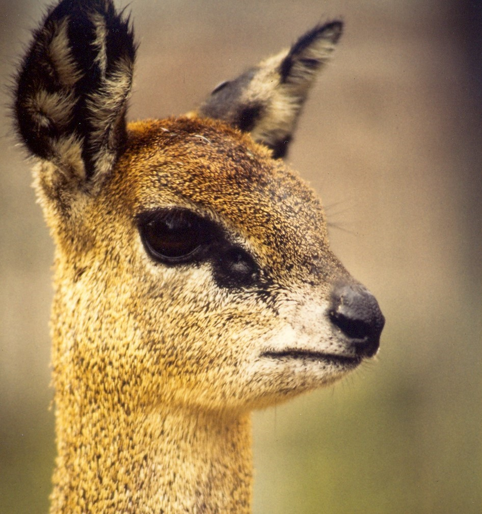

The klipspringer (Oreotragus oreotragus) |
|||||||
The klipspringer (/ˈklɪpˌsprɪŋər/) (Oreotragus oreotragus) is a small antelope found in eastern and southern Africa. The sole member of its genus and subfamily/tribe, the klipspringer was first described by German zoologist Eberhard August Wilhelm von Zimmermann in 1783. The klipspringer is a small, sturdy antelope; it reaches 43–60 centimetres (17–23+1⁄2 inches) at the shoulder and weighs from 8 to 18 kilograms (18 to 40 pounds). The coat of the klipspringer, yellowish gray to reddish brown, acts as an efficient camouflage in its rocky habitat. Unlike most other antelopes, the klipspringer has a thick and coarse coat with hollow, brittle hairs. The horns, short and spiky, typically measure 7.5–9 cm (3–31⁄2 in). |
 |
||||||
|
 | ||||||
Facts:
|
|||||||
Source: Wikipedia |
|||||||